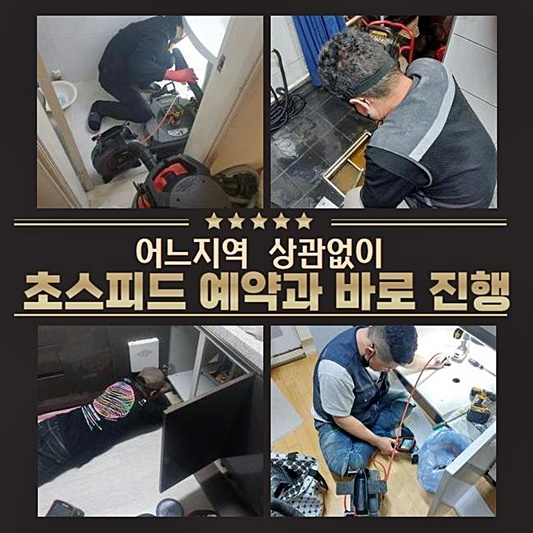
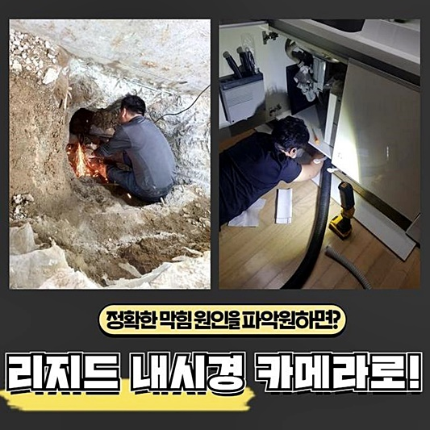
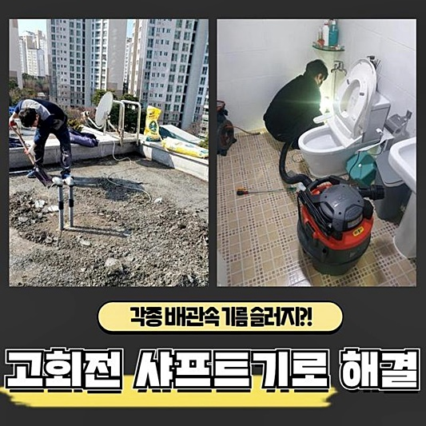
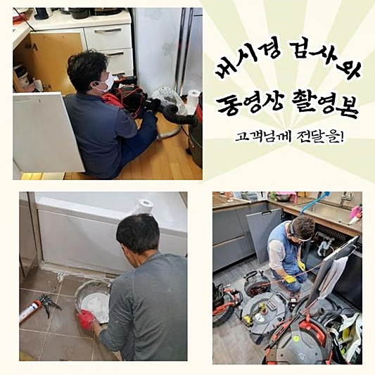
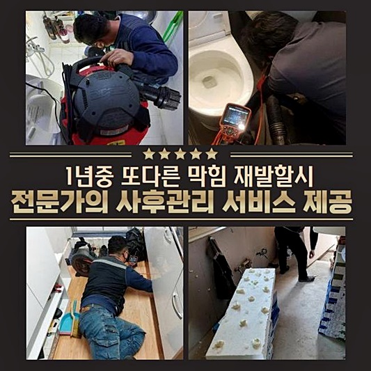
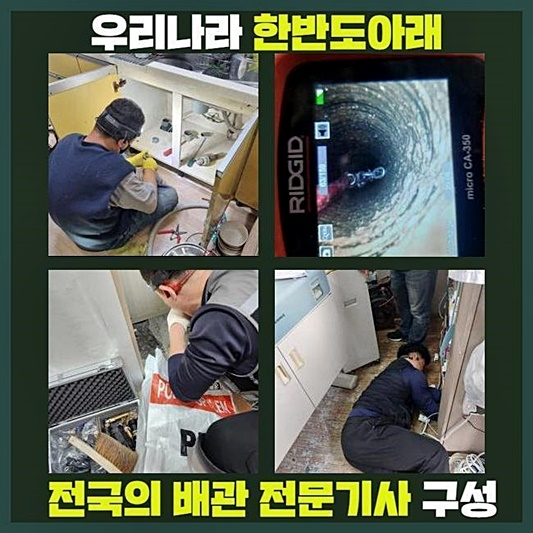

🏠 고양시 주교동하수구막힘 행주동 집수정청소 물샘전문업체
고양 하수구막힘 전문 시공 후기

📋 작업 개요
- 위치: 고양
- 서비스 유형: 하수구막힘, 배관막힘, 집수정막힘, 누수수리, 역류해결, 뚫는업체, 배관청소, 고압세척, 설비공사, 배관보수, 악취차단
- 작업 일시: 2024. 6. 17. 17:23
- 업체명: 하수구수사대 (010-5615-2118)
🔍 문제 상황
고양시 주교동하수구막힘 행주동 집수정청소 물샘전문업체
세대 안에서 배수관이 제 역할을 못하는 동기를 알아보면 다용도실 등에서 역류증상이 일어나기도 하며 욕실에서의 물사용이 알맞게 실시되지 않아서 문제가 생기는 경우도 있답니다
그러한 일들은 물에 녹지않는 단단한 침전물들이 혼입되었거나 일회용 소모품들을 위시하여 갖가지 슬러지들이 계속해서 유입되어 표출될 가망성도 작지 않지만 건축물의 자체적인 문제점에 연유하여 일어나는 지점도 무시하지 못할 수준입니다
이날에는 다세대주택에서 일찍부터 배관뚫음을 실시하던 와중에 급한 문의가 들어왔답니다
세대 내부의 배수관에 종합적으로 문제가 생겨 역류증상이 도처에서 크고 작은 양상으로 일어나고 있다는 통지를 들은 뒤 인근에서 공사를 담당하고 있었던 저희가 즉시 방문하였죠
세대 내부에 매립된 하수관에서 발현된 사태가 아닌 메인 배관에서 생긴 트러블은 고압 물청소를 활용한 침전물 소멸이 능률적인 해결책이랍니다
그렇기에 이러한 구조물을 알맞게 소제하는데 맞춤인 청소장비 일체를 소지한 다음 출장을 나갔지요
저희와 같이 기기 일체를 완벽히 준비하지 못한 사람들은 의뢰자가 요청한 지점에 도달하여서 일이 어설프게 진행될 여지가 있고 문제 해결이 온전히 발현되지 않을 수 있습니다
흡입기를 작동시키거나 배관 전용 파쇄공구로만 고장을 처리하려고 생각한다면 세대 내부에서 나온 배관들과는 판이하게 관 자체의 크기가 방대하여 차단 해결이 쉽지않아 지는 것입니다

🔎 원인 분석
💡 전문가 진단: 정밀 진단 장비를 사용하여 슬러지의 고착 여부를 판명하고 타격/세척 작업을 실시했습니다.
육안으로 목격되는 부분의 잔재들만 처치해버린다면 얼마간 물흐름이 목도될 여지는 있겠지만 시간의 흐름에 의해 물 흐름 정체 현상이 발현되어 답답해지므로 해당 트러블을 없애나가려 전문가를 물색할 땐 여러 가지의 기기들을 갖춘 사람에게 의뢰할 걸 추천합니다
방문지에 도달하여서 앞서 배관비트실로 이동해 중앙 하수관에 나타난 문제점이 무엇인지에 관해 분석해 보기로 하였어요
누가된 침전물들에 연유한 문제점일 가능성도 크지만 건축자재들이 수로를 커트하여 한시적으로 발발한 모양새일 가능성도 있기에 전체적인 가변적 포인트를 염두에 둘 필요성이 있답니다
온전히 파이프의 안쪽을 파악하기 위해선 배관카메라가 준비되어야 합니다
저흰 이런 작업 연륜이 넉넉하기에 해당 제반사항에서 나타날 수 있는 장애들을 탐색할 수 있는 값비싼 기계들과 고난이도의 시공에서 체득한 능력이 충분하여 어떠한 이물들이라도 신속히 알아내어 해결방안을 제시해 드리도록 만전을 기하여 출동하여 고장을 처리하고 있습니다
정체가 심대한 위치는 어떤 자리인지 꼼꼼히 전용촬영설비로 들여다보며 작업을 이어나갔어요
촬영되는 모습을 살펴보았더니 공용 배관 안쪽은 다양한 침전물들과 이물들로 길목이 막히는 바람에 물빠짐이 안되고 있었답니다
가정 내에서 매일같이 쓰는 세정제 등의 화학제품에 내포된 인자들과 찌꺼기들 또 설거지에서 나온 여러 쓰레기를 포함하여 수백가지 물체들이 엉겨붙어 누적되면 이후 바위처럼 강한 소석회성분으로 변질될 수 있는데요
이걸 곧바로 세정하지 않은 상태로 방치해 버린다면 점점 크기가 커지게 되고 물흐름을 방해하여 공용 하수도에 트러블이 발생하는 거예요

🔧 작업 과정
지난 주에 처리했던 건축물에선 반려동물 케어에 쓰는 가루모래를 한 집에서 배관으로 버리는 일로 유사한 고장이 발현되기도 하였고 타입은 이처럼 내방장소마다 차이가 나죠
누적이 심화된 처소의 배수관을 분리하여 세척을 실시하면 안에 고여있던 액체와 침전물 등이 바깥쪽으로 분출될 수 있어서 근처가 더러워질 가망성이 높아 우선적으로 보호비닐로 방어해야 하죠
이런 보양 작업을 깔끔하게 이행한 뒤 고착화된 배관 안의 찌꺼기들을 처리할 주비를 하였어요
파이프의 사이즈가 길쭉하여 중반부에서도 시공이 요망되었기 때문에 탐지 설비를 이용해서 어느 부위까지 범주를 정해야 적절할지 간파해 두었습니다
찾은 위치 또한 철저한 보양을 진행해 혹시 부근으로 침전물이 흩어지는 경우에 대비하였어요
옆부분에 구멍을 뚫어서 세척을 할 수 있는 스페이스도 마련하였어요
첫부분부터 센터까지 두 곳에서 쇄소를 이행하는 시공을 감행하여 안쪽에 고착화된 슬러지 뭉텅이들을 없애나갔어요
물청소 업무중에는 배수관에 강력하게 붙어 있었던 찌꺼기들이 점차적으로 이탈하는 모습이 목격되었답니다
해당 장비는 에너지 레벨이 높아서 널리 사용되고 있는 것으로 내부에 고착되었던 찌꺼기들을 소멸시키는 것은 수월하였답니다
단박에 전체의 파이프 노폐물을 처리하는 것은 힘겨우니 단계를 구분하여 배관cctv를 활용해서 오손이 쌓인 위치를 섬세하게 관측한 뒤 수압을 점차적으로 높이고 정결하게 변모시켰답니다
과하게 경직된 고형물은 화학약품을 붓는 상황도 존재하지만 본 작업장은 그 업무까지 이행할 필요성은 없었어요
작업을 끝낸 뒤 내시경카메라로 정결히 하수구 소제가 완결됐는지 점검했고 단박에 많은 양의 수돗물을 내리는 검사도 빠뜨리지 않았죠
이번에 갔던 건물에선 이곳 저곳에서 누수증세가 확인되었는데 특히 천장부근에 크고작은 수분이 잠입한 흔적이 보였답니다
대략적인 구조를 파악해보니 세대로 연결되는 파이프가 노후되어 갈라져 있어 새 것으로 교환할 사태에 직면하였지만 영조물의 전반에 걸쳐 배수관막힘이 발발하여서 시공 업무가 많았기에 이 부분을 수습하는 것에 업무가 대다수 소모됐고 시공 허가 시간이 초과되어 누수관련 시공은 이틀 뒤에 찾아가 손보기로 약조하고 끝마쳤답니다


✅ 작업 완료
이 처소는 관리사무소를 통하여 저층 세대 구성원들이 한꺼번에 배수가 잘되지 않는다는 항의를 받아서 상대적으로 빨리 사태를 판단하고 저희에게 문의하신 덕에 쉬이 해결을 보실 수 있었지요
여러가지 증상을 동반한 물막힘 증세나 역류증상에 의하여 일상 생활에 지장이 초래된다면 저희에게 전화해서 순조롭게 해결하시길 부탁드립니다
저흰 재빠른 이동이 영업 방침으로 되어있고 진솔하게 내역을 공개하여 드리니 근심하시지 않아도 돼요
주저하지말고 보수요청을 해주시면 심혈을 기울여 청소하여 만족스러운 결실로 회답해 드리겠습니다



⚠️ 베란다 누수 및 방수 관리 방법
- ✅ 비가 많이 올 때 창틀 주변이나 아래층 천장에 얼룩이 생기는지 정기적으로 확인해 보세요.
- ✅ 우수관 주변 실리콘 마감이 들뜨거나 깨진 틈새가 있는지 손상 여부를 수시로 체크하세요.
- ✅ 베란다 바닥 타일의 줄눈(메지)이 소실되면 그 틈으로 물이 침투하여 누수가 유발됩니다.
- ✅ 누수 의심 증상 발견 시 방치하면 아래층 손실이 커지므로 즉시 전문가의 진단을 받으십시오.
💡 핵심 정리
- 확실한 장비 작업(내시경 점검 및 샤프트 스케일링)으로 원인을 뿌리 뽑습니다.
- 작업 후 1년 이내에 동일한 부위 재발 시 100% 무상 A/S 서비스를 보장합니다.
- 서울 · 경기 · 인천 전 지역에 24시간 언제든 긴급 출동할 수 있도록 항시 대기 중입니다.
❓ 자주 묻는 질문 (FAQ)
🚨 고양 하수구막힘 문제로 고민이신가요?
정확한 원인 진단과 확실한 시공으로 재발 없는 해결을 약속드립니다.
24시간 긴급 출동 | 서울 · 경기 · 인천 전지역 | 1년 내 재발 시 무상 A/S